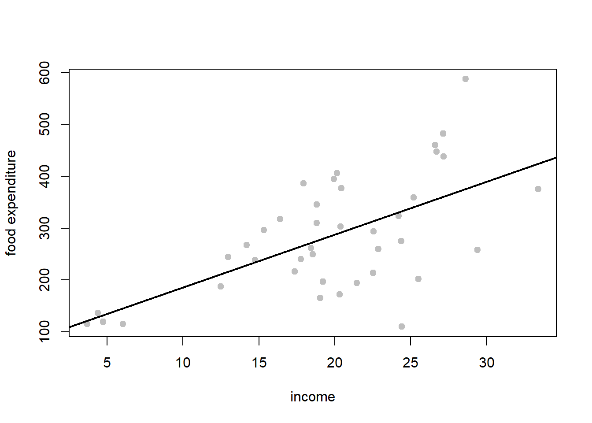
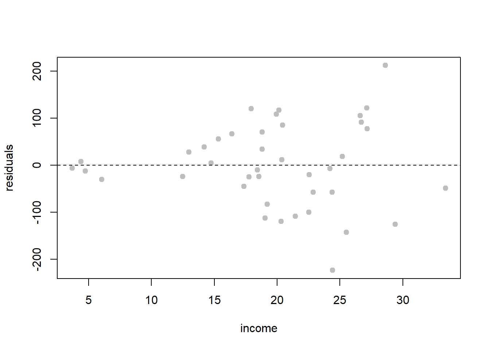
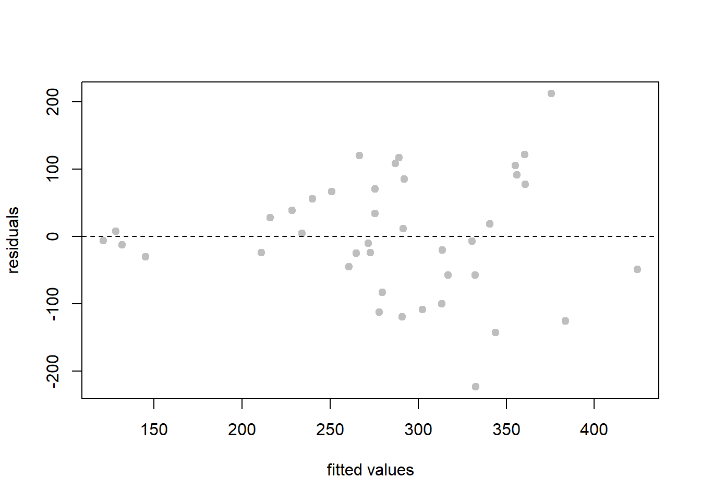
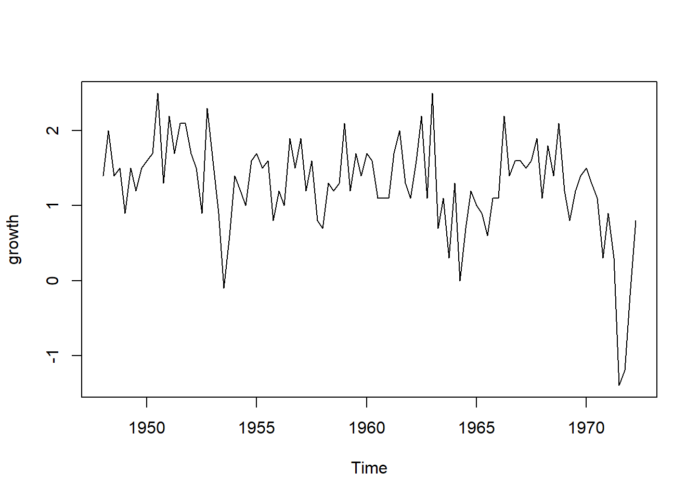
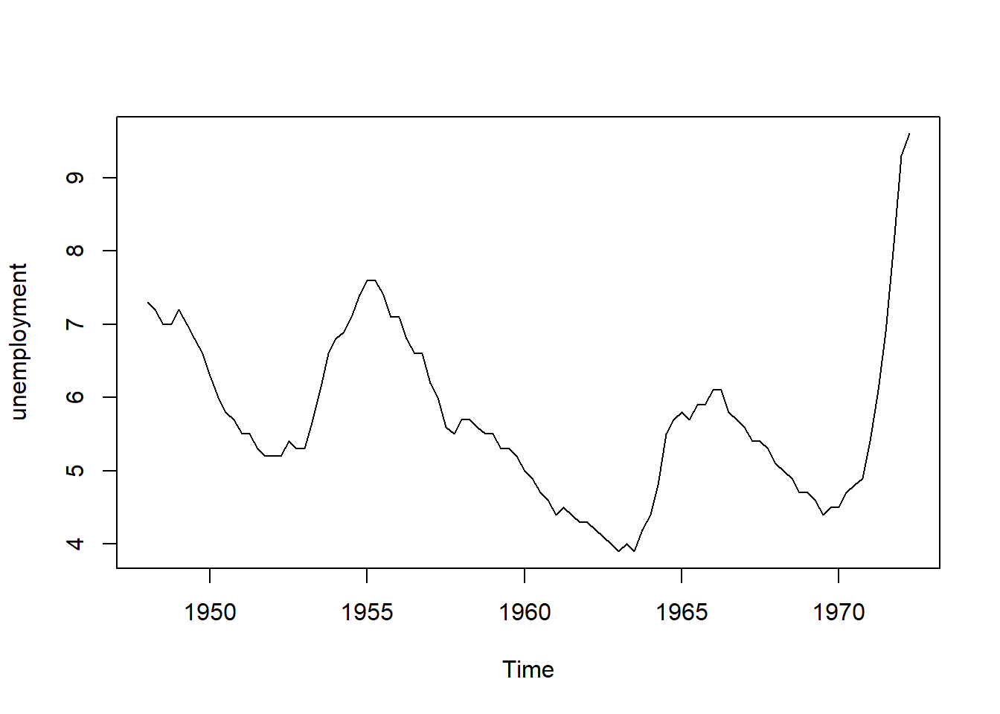
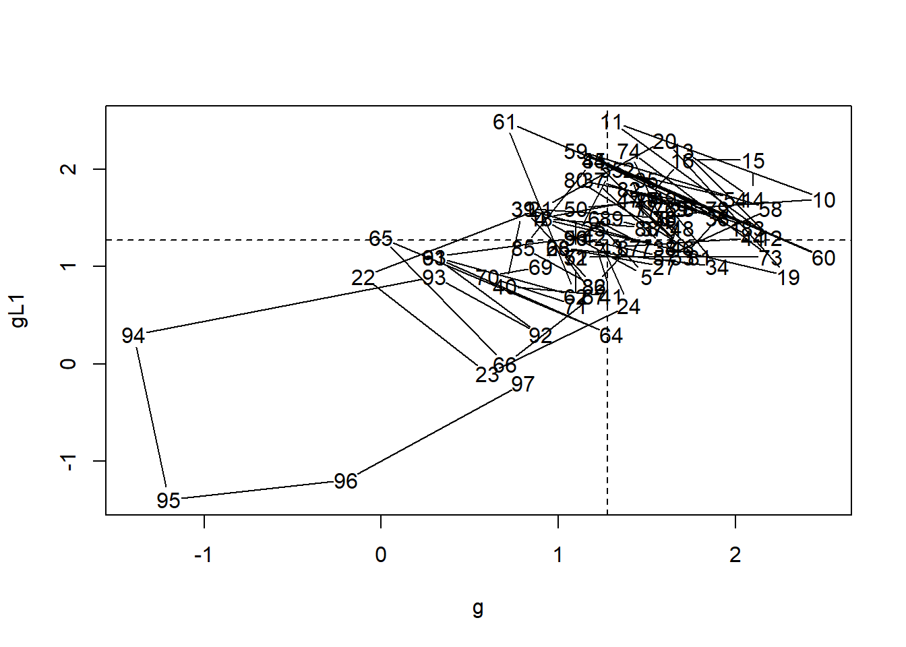
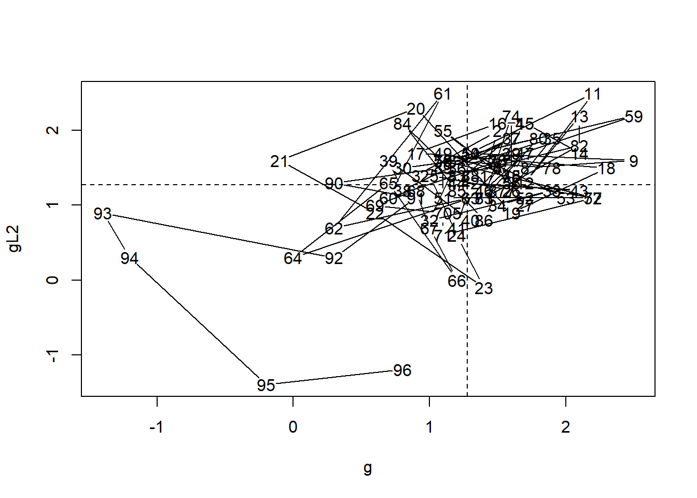
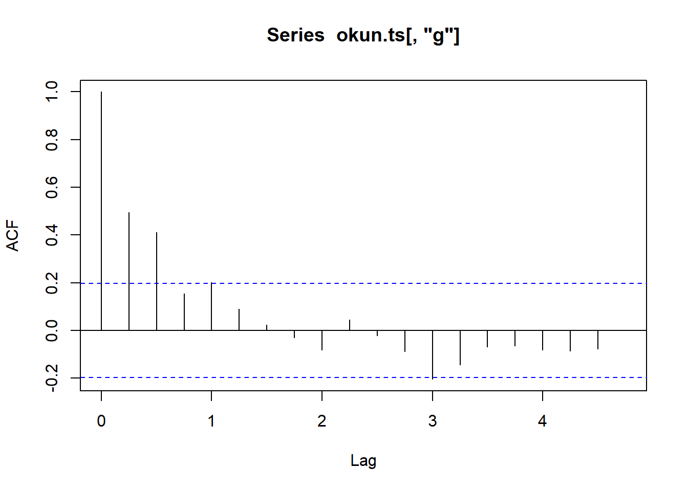

Collinearity does not bias OLS, but it inflates the variance of estimated coefficients. As a result, t‑tests lose power and coefficient signs may look unstable across specifications—even when the model has a high \(R^2\). Diagnostics such as VIF help decide whether variables overlap so much that individual effects are hard to interpret.
Collinearity (multicollinearity) among regressors occurs when two or more move closely together or have limited variability. It inflates the variance of estimated parameters (less precise t-tests), even though OLS estimates remain unbiased. As a result, a model may have a high \(R^2\) or a large F‑statistic but insignificant individual coefficients.
🧰 Packages
PoEdata, broom, knitr, car
# install.packages(c("PoEdata","broom","knitr","car")) ; install once if not already installedlibrary(PoEdata) # example datasets used in the courselibrary(broom) # tidier model outputs (tidy/glance/augment)
Warning: package 'broom' was built under R version 4.4.3
Warning: package 'knitr' was built under R version 4.4.3
library(car) # regression diagnostics (e.g., VIF)
Loading required package: carData
# Example data: cars (mpg = miles per gallon; cyl = cylinders; disp = engine displacement; wt = weight)data(mtcars)# Simple model# fit a linear regression: mpg explained by cylindersmod1 <-lm(mpg ~ cyl, data = mtcars)# convert model output to a neat table (broom::tidy + knitr::kable)kable(tidy(mod1), caption ="A simple linear 'mpg' model")
A simple linear ‘mpg’ model
term
estimate
std.error
statistic
p.value
(Intercept)
37.88458
2.0738436
18.267808
0
cyl
-2.87579
0.3224089
-8.919699
0
Now add more regressors:
# fit a multiple regression with 3 predictors (cyl, disp, wt)mod2 <-lm(mpg ~ cyl + disp + wt, data = mtcars)# format the model output into a clean tablekable(tidy(mod2), caption ="Multivariate 'mpg' model")
Multivariate ‘mpg’ model
term
estimate
std.error
statistic
p.value
(Intercept)
41.1076776
2.8424260
14.4621802
0.0000000
cyl
-1.7849435
0.6071105
-2.9400638
0.0065117
disp
0.0074729
0.0118447
0.6309079
0.5332173
wt
-3.6356770
1.0401375
-3.4953811
0.0015955
Note
When adding eng and wgt, the coefficient for cyl can turn insignificant—a classic sign of collinearity because these vehicle traits tend to move together.
Variance Inflation Factor (VIF)
The VIF for regressor \(x_k\) is \(VIF_k = \dfrac{1}{1-R_k^2}\), where \(R_k^2\) is from regressing \(x_k\) on the other regressors.
v <- car::vif(mod2) # calculate VIF values to diagnose multicollinearitytab <-data.frame(regressor =names(v), # create a small table with regressor namesVIF =as.numeric(v), # convert VIF values to numeric for displayrow.names =NULL) # avoid row names in the tablekable(tab, caption ="Variance inflation factors for the 'mpg' regression model.") # nicely format output
Variance inflation factors for the ‘mpg’ regression model.
regressor
VIF
cyl
5.413600
disp
9.924054
wt
4.769703
Tip
Rules of thumb
- VIF > 10 → strong collinearity (commonly used cutoff)
- VIF > 5 → moderate collinearity (early warning) These cut-offs are only heuristics. Evaluate VIFs alongside theory, sample size, and model purpose; high VIFs don’t automatically require dropping variables (O’Brien, 2007).
Mitigations (when VIFs are high)
Remove or combine collinear variables (e.g., combine cyl and eng into a power index).
Use PCA to produce orthogonal components.
Standardise/centre variables (helps especially with interactions/polynomials (it won’t “fix” genuine overlap among distinct variables).
Use Ridge regression if retaining all variables is preferred.
Consider transformations (e.g., logs).
Summary
Collinearity leaves OLS unbiased but makes estimates imprecise.
Always check VIFs when several predictors are conceptually related.
If VIFs are high, consider dropping, combining, or re‑specifying predictors—and justify choices with theory.
References O’Brien, Robert. (2007). A Caution Regarding Rules of Thumb for Variance Inflation Factors. Quality & Quantity. 41. 673-690. 10.1007/s11135-006-9018-6.
Lab 15 — Heteroskedasticity
🎯 Learning outcomes
Understand the key concept(s) introduced in this lab and their purpose in empirical analysis.
Correctly implement the core R workflow for this topic and present clean, well-captioned results.
Interpret model output in context and link diagnostics to modeling choices.
Recognise common pitfalls and apply simple robustness checks.
🧰 Prerequisites
Prior exposure to multiple regression and basic inference (t-tests, F-tests).
R and RStudio installed.
Packages: PoEdata, broom, knitr, plus any additional packages used in this lab.
Overview
This lab introduces the core idea, why it matters for inference and decision-making, and where it fits in the broader modeling workflow. You will practise the implementation in R, interpret outputs carefully, and connect diagnostics back to modeling decisions.
The Gauss–Markov theorem assumes homoskedasticity (constant error variance \(\sigma^2\)). In many economic datasets, variance grows with some regressors (e.g., higher‑income households show more dispersion in expenditure). With heteroskedasticity, OLS coefficients remain unbiased, but standard errors and therefore, with heteroskedasticity, OLS coefficients remain unbiased (under exogeneity) but the usual SEs are inconsistent—use HC (White) or other robust SEs. For completeness, apart from homoskedasticity, Gauss–Markov (for OLS to be BLUE) also requires linearity in parameters, no perfect collinearity, and exogeneity. Independence/no autocorrelation is also standard in time-series contexts.
🧰 Packages
lmtest, broom, PoEdata, car, sandwich, knitr
# install.packages(c("lmtest","broom","PoEdata","car","sandwich","knitr")) # install once if neededlibrary(lmtest) # tests for regression models (e.g., Breusch-Pagan)
Loading required package: zoo
Warning: package 'zoo' was built under R version 4.4.3
Attaching package: 'zoo'
The following objects are masked from 'package:base':
as.Date, as.Date.numeric
library(broom) # tidy/glance/augment model outputslibrary(PoEdata) # course datasetslibrary(car) # diagnostics (e.g., VIF)library(sandwich) # robust (heteroskedasticity-consistent) SEslibrary(knitr) # neat tables (kable)data("food", package ="PoEdata") # load the 'food' datasetmod1 <-lm(food_exp ~ income, data = food) # simple OLS: food expenditure explained by income# Scatter and fitted lineplot(food$income, food$food_exp, # scatterplot of income vs. food expenditurexlab ="income", ylab ="food expenditure",pch =19, col ="grey") # filled points, grey colorabline(mod1, lwd =2) # add fitted regression line with thicker stroke

Spotting heteroskedasticity with residual plots
Residual plots help detect heteroskedasticity visually. Under homoskedasticity, residuals should scatter randomly around zero with constant spread. Look for:
Fanning patterns: residuals spread out (or narrow) as x increases
Clusters or groups: different variance across subpopulations
Non-random patterns: suggests model misspecification
res <-residuals(mod1) # residuals (observed - fitted)yhat <-fitted(mod1) # fitted (predicted) values from the model# Residuals vs. income (check for nonlinearity or changing spread with income)plot(food$income, res,xlab ="income", ylab ="residuals",pch =19, col ="grey")abline(h =0, lty =2) # reference line at zero residual

# Residuals vs. fitted values (diagnose heteroskedasticity/patterns)plot(yhat, res,xlab ="fitted values", ylab ="residuals",pch =19, col ="grey")abline(h =0, lty =2) # reference line at zero residual

Breusch–Pagan test (manual construction)
The Breusch–Pagan test is a formal test for heteroskedasticity. The null hypothesis is \(H_0:\)\(\text{homoskedasticity (constant variance)}\).
Test statistic: \(\chi^2 = N \cdot R^2_{\text{aux}}\)
where \(R^2_{\text{aux}}\) comes from regressing squared residuals on the original regressors:
Decision rule: - If p-value < 0.05 (or your chosen \(\alpha\)): reject \(H_0\) → evidence against homoskedasticity (i.e., evidence of heteroskedasticity) - If p-value ≥ 0.05: fail to reject \(H_0\) → no strong evidence of heteroskedasticity
Alternatively, compare the test statistic to the critical value: - If \(\chi^2\) > critical value: reject \(H_0\) - If \(\chi^2\) ≤ critical value: fail to reject \(H_0\)
In this example, if p-value is small (< 0.05), we have evidence that variance increases with income.
White (quadratic) version
White’s test extends Breusch–Pagan by including squares and cross-products of regressors in the auxiliary regression. This detects more general forms of heteroskedasticity (not just linear). For a model with one regressor \(x\):
Test statistic: \(\chi^2 = N \cdot R^2_{\text{aux}}\) ∼ \(\chi^2_k\), where \(k\) is the number of regressors in the auxiliary regression (excluding the intercept).
# auxiliary regression with quadratic term (tests nonlinear heteroskedasticity)modres2 <-lm(ressq ~ income +I(income^2), data = food) Rsq2 <-summary(modres2)$r.squared # R² from auxiliary regressionS2 <-summary(modres2)$df[1]-1# degrees of freedom (number of regressors)chisq2 <- N * Rsq2 # Breusch–Pagan-type chi-square statisticpval2 <-1-pchisq(chisq2, S2) # p-value (right-tail)c(statistic = chisq2, df = S2, p.value = pval2) # show results
Decision rule: - If p-value < 0.05: reject \(H_0\) → evidence of heteroskedasticity (possibly nonlinear) - If p-value ≥ 0.05: fail to reject \(H_0\) → no strong evidence
White’s test is more general than Breusch–Pagan (detects nonlinear heteroskedasticity) but uses more degrees of freedom. In small samples, use Breusch–Pagan if you suspect linear heteroskedasticity, or White if you suspect more complex patterns.
Breusch–Pagan with bptest()
# run Breusch–Pagan test and tidy the output# display results as a formatted tablekable(tidy(bptest(mod1)), caption ="Breusch–Pagan heteroskedasticity test")
Breusch–Pagan heteroskedasticity test
statistic
p.value
parameter
method
7.384424
0.0065791
1
studentized Breusch-Pagan test
Interpreting bptest() output
The bptest() function reports: - statistic: the BP test statistic (approximately \(\chi^2\) distributed) - p.value: probability of observing this statistic under \(H_0\) - parameter: degrees of freedom
Decision: If p-value < 0.05, reject homoskedasticity and consider using robust standard errors.
Goldfeld–Quandt test (indicator split: metro vs rural)
Tests whether error variance differs between two subgroups. Split the sample by a grouping variable or by ordering observations (e.g., by income level).
Test statistic: \(F = \dfrac{\hat{\sigma}_1^{\,2}}{\hat{\sigma}_2^{\,2}}\)
where \(\hat{\sigma}_1^{\,2}\) and \(\hat{\sigma}_2^{\,2}\) are estimated error variances from each subsample.
Under \(H_0\) (equal variances), \(F \sim F_{df_1, df_2}\).
alpha <-0.05# significance level (5%)data("cps2", package ="PoEdata") # load CPS datasetm <- cps2[cps2$metro ==1, ] # subset: people living in metropolitan areasr <- cps2[cps2$metro ==0, ] # subset: people NOT living in metropolitan areaswg1 <-lm(wage ~ educ + exper, data = m) # regression for metro groupwg0 <-lm(wage ~ educ + exper, data = r) # regression for non-metro groupdf1 <- wg1$df.residual # residual degrees of freedom (metro model)df0 <- wg0$df.residual # residual degrees of freedom (non-metro model)sig1 <-summary(wg1)$sigma^2# estimated error variance metrosig0 <-summary(wg0)$sigma^2# estimated error variance non-metrofstat <- sig1 / sig0 # F-statistic: ratio of variancesFlc <-qf(alpha/2, df1, df0) # lower critical value from F distributionFuc <-qf(1- alpha/2, df1, df0) # upper critical value (two-tail test)c(F = fstat, Flc = Flc, Fuc = Fuc) # display F statistic and critical bounds
F Flc Fuc
2.0877623 0.8051984 1.2617297
Interpreting the Goldfeld–Quandt test
Decision rule (two-tailed test): - If \(F <\) lower critical value OR \(F >\) upper critical value: reject \(H_0\) → variances differ - If \(F\) lies between the two critical values: fail to reject \(H_0\)
Decision rule (one-tailed test): - If \(F >\) upper critical value (or p-value < 0.05): reject \(H_0\) → variance in group 1 is larger
In this metro vs. rural example, a significant F-statistic suggests systematic differences in wage variance between regions.
Goldfeld–Quandt without an indicator (split by median income):
alpha <-0.05# significance level (5%)medianincome <-median(food$income) # compute median income# Split sample into low-income and high-income groupsli <- food[food$income <= medianincome, ] # low-income group (<= median)hi <- food[food$income >= medianincome, ] # high-income group (>= median)# Fit the same regression separately in each subgroupeqli <-lm(food_exp ~ income, data = li) # model for low-income groupeqhi <-lm(food_exp ~ income, data = hi) # model for high-income group# Extract degrees of freedom and residual variancesdfli <- eqli$df.residual; dfhi <- eqhi$df.residual # residual degrees of freedomsqli <-summary(eqli)$sigma^2; sqhi <-summary(eqhi)$sigma^2# estimated error variances# F test comparing variances (heteroskedasticity between groups)fstat <- sqhi / sqli # F statistic: ratio of variancesFc <-qf(1- alpha, dfhi, dfli) # critical value (right-tail test)pval <-1-pf(fstat, dfhi, dfli) # p-valuec(F = fstat, Fcrit = Fc, p.value = pval) # display test statistic, critical value, and p-value
F Fcrit p.value
3.61475572 2.21719713 0.00459643
Interpreting the GQ test (one-tailed)
Decision rule: - If p-value < 0.05: reject \(H_0\) → variance increases with income - If F > critical value: reject \(H_0\)
This version tests whether high-income households have more variable food expenditure than low-income households.
Or use gqtest() directly:
foodeq <-lm(food_exp ~ income, data = food) # baseline OLS# Goldfeld–Quandt test for heteroskedasticity:# - order.by = food$income: sort observations by income# - point = 0.5: split the sample around the middle (drops central portion)# - alternative = "greater": tests whether variance is larger in the upper grouptst <- lmtest::gqtest(foodeq,point =0.5,alternative ="greater",order.by = food$income)# tidy + nicely format test outputkable(tidy(tst), caption ="R function `gqtest()` with the 'food' equation")
Multiple parameters; naming those columns df1 and df2.
R function gqtest() with the ‘food’ equation
df1
df2
statistic
p.value
method
alternative
18
18
3.614756
0.0045964
Goldfeld-Quandt test
variance increases from segment 1 to 2
Interpreting gqtest() output
The function reports: - statistic: F-ratio comparing variances - p.value: one-tailed (tests “greater” alternative by default) - parameter: degrees of freedom for numerator and denominator
Decision: If p-value < 0.05, conclude that variance is significantly larger in the upper group (heteroskedasticity present).
Note:point = 0.5 means observations are split around the median. Adjust this parameter if you want to drop more/fewer central observations.
Heteroskedasticity‑consistent (HC) standard errors
Heteroskedasticity-consistent (robust) standard errors When heteroskedasticity is detected, one solution is to use robust standard errors (also called White standard errors or HC standard errors). These adjust the variance-covariance matrix to account for non-constant variance without changing the coefficient estimates.
Key types:
HC0: White’s original estimator HC1: degrees-of-freedom adjustment (recommended for small samples) HC2, HC3: further refinements for leverage and influence
The OLS point estimates remain unchanged—only the standard errors (and thus t-statistics and p-values) are corrected.
foodeq <-lm(food_exp ~ income, data = food) # baseline regressionkable(tidy(foodeq), # show coefficients with regular SEscaption ="Regular standard errors in the 'food' equation")
Regular standard errors in the ‘food’ equation
term
estimate
std.error
statistic
p.value
(Intercept)
83.41600
43.410163
1.921578
0.0621824
income
10.20964
2.093263
4.877381
0.0000195
cov1 <- car::hccm(foodeq, type ="hc1") # compute robust (HC1) covariance matrixfood.HC1 <- lmtest::coeftest(foodeq, vcov. = cov1) # apply robust SEs to regression outputkable(tidy(food.HC1), # show coefficients with robust SEscaption ="Robust (HC1) standard errors in the 'food' equation")
Robust (HC1) standard errors in the ‘food’ equation
term
estimate
std.error
statistic
p.value
(Intercept)
83.41600
27.463748
3.037313
0.0042989
income
10.20964
1.809077
5.643566
0.0000018
Important
Robust (HC) errors fix inference under heteroskedasticity, but the point estimates are unchanged.
Summary
You applied the technique in R, produced tidy outputs, and interpreted them in context.
Keep focusing on clean tables, explicit assumptions, and diagnostics that justify your specification.
Use the provided patterns as a template for future empirical work.
Lab 16 — Serial Correlation (Autocorrelation)
🎯 Learning outcomes
Understand the core ideas and assumptions for this lab’s topic.
Implement the workflow in R and create tidy outputs with clear captions.
Interpret results in context and connect diagnostics to modeling decisions.
Recognise common pitfalls and perform basic robustness checks.
🧰 Prerequisites
Multiple regression and inference (t-tests, F-tests).
R and RStudio installed.
Packages: broom, knitr, and any other packages used in the lab code.
Overview
Serial correlation occurs when regression errors are correlated across time periods. In a time series regression, if \(e_t\) is correlated with \(e_{t-1}\), \(e_{t-2}\), etc., we have serial correlation.
Serial correlation is correlation across time in a series. In regression, autocorrelated errors lead to incorrect standard errors (and misleading t-tests). We may incorrectly conclude that coefficients are statistically significant.
Common causes:
Omitted variables that vary systematically over time
Model misspecification (wrong functional form)
Inertia or persistence in economic variables (e.g., GDP growth tends to persist)
The fix: Use HAC (heteroskedasticity and autocorrelation consistent) standard errors, or model the autocorrelation structure explicitly (e.g., AR models, dynamic specifications).
To diagnose whether growth is autocorrelated, we create scatter plots comparing growth at time t with growth at time \(t+1\) (lag 1) and \(t+2\) (lag 2).
What to look for:
Positive correlation (upward diagonal pattern) → high growth tends to follow high growth Negative correlation (downward diagonal pattern) → high growth followed by low growth Random scatter → no autocorrelation
The reference lines divide the plot at the means, creating four quadrants. With positive autocorrelation, most points fall in the upper-right and lower-left quadrants.
Example: growth vs unemployment (Okun’s data)
The okun dataset contains quarterly US data on:
g: Real GDP growth rate (percentage change) u: Unemployment rate
Okun’s Law describes the inverse relationship between GDP growth and changes in unemployment. Before running regressions with time series data, we should check whether the series themselves exhibit autocorrelation.
data("okun", package ="PoEdata") # load Okun's law quarterly datasetokun.ts <-ts(okun, start =c(1948, 1), frequency =4) # declare the data 'quarterly' time-series object# Plot time series GDP%plot(okun.ts[, "g"], ylab ="growth") # real GDP growth over time

plot(okun.ts[, "u"], ylab ="unemployment") # unemployment rate over time

# Scatter with lags/leadsggL1 <-data.frame(g = okun.ts[, "g"],gL1 = stats::lag(okun.ts[, "g"], -1) # lead by 1 quarter (stats::lag with -1 shifts forward))plot(ggL1) # scatter of g vs. g(+1)abline(h =mean(ggL1$gL1, na.rm =TRUE), # horizontal line at mean of g(+1)v =mean(ggL1$g, na.rm =TRUE), lty =2) # vertical line at mean of g

ggL2 <-data.frame(g = okun.ts[, "g"],gL2 = stats::lag(okun.ts[, "g"], -2) # lead by 2 quarters)plot(ggL2) # scatter of g vs. g(+2)abline(h =mean(ggL2$gL2, na.rm =TRUE),v =mean(ggL2$g, na.rm =TRUE), lty =2)

Interpreting lag scatter plots
In the lag-1 plot (\(g\) vs \(g_{t+1}\)): - If points cluster along an upward-sloping diagonal, growth exhibits positive autocorrelation - Most points in upper-right and lower-left quadrants → when growth is high today, it tends to be high next quarter - This pattern suggests persistence or momentum in GDP growth
In the lag-2 plot (\(g\) vs \(g_{t+2}\)): - A weaker diagonal pattern suggests autocorrelation diminishes at longer lags - If points become more randomly scattered, correlation decays over time
Why this matters for regression: If the residuals from your regression show similar patterns, standard errors will be incorrect.
The Autocorrelation Function (ACF)
The ACF provides a formal measure of correlation at different lags:
Each vertical bar shows \(\hat{\rho}_k\) (the estimated correlation at lag k).
Blue dashed lines: 95% confidence bounds (approximately \(\pm \dfrac{2}{\sqrt{n}}\)).
Bars outside the bounds → statistically significant autocorrelation.
Bars inside the bounds → not significantly different from zero.
Bars outside the bounds → statistically significant autocorrelation Bars inside the bounds → not significantly different from zero
# Correlogram (autocorrelation function) for growthacf(okun.ts[, "g"])

Phillips curve example and BG/DW tests
library(dynlm) # dynamic linear models for time series
Warning: package 'dynlm' was built under R version 4.4.3
data("phillips_aus", package ="PoEdata") # Australian Phillips-curve dataphill.ts <-ts(phillips_aus, start =c(1987, 1), end =c(2009, 3), frequency =4) # quarterly tsinflation <- phill.ts[, "inf"] # inflation seriesDu <-diff(phill.ts[, "u"]) # change in unemployment (∆u_t)# FDL model: inf_t = β1 + β2 * ∆u_t + e_tphill.dyn <-dynlm(inf ~diff(u), data = phill.ts) # regress inflation on ∆unemploymentkable(tidy(phill.dyn), caption ="Summary of the `phillips` model")# tidy+format regression output
Warning: The `tidy()` method for objects of class `dynlm` is not maintained by the broom team, and is only supported through the `lm` tidier method. Please be cautious in interpreting and reporting broom output.
This warning is displayed once per session.
Summary of the phillips model
term
estimate
std.error
statistic
p.value
(Intercept)
0.7776213
0.0658249
11.813474
0.0000000
diff(u)
-0.5278638
0.2294049
-2.301014
0.0237539
# Residual plot and correlogram (check for serial correlation)ehat <-resid(phill.dyn) # regression residualsplot(ehat); abline(h =0, lty =2) # residuals over time, zero reference
# NOTE: preserving your object names a, b, c, d and test types.# (We only use base::c() below to avoid masking by object 'c')# type = "F" can be preferable in small samples (finite-sample adjustment)a <- lmtest::bgtest(phill.dyn, order =1, type ="F", fill =0) # BG test AR(1); replace initial NAs by 0b <- lmtest::bgtest(phill.dyn, order =1, type ="F", fill =NA) # BG test AR(1); drop obs with initial NAsc <- lmtest::bgtest(phill.dyn, order =4, type ="Chisq", fill =0) # BG test AR(4); large-sample chi-square; fill 0d <- lmtest::bgtest(phill.dyn, order =4, type ="Chisq", fill =NA) # BG test AR(4); drop initial NAs# Collect results into a neat tabledfr <-data.frame(Method = base::c("1, F, 0", "1, F, NA", "4, Chisq, 0", "4, Chisq, NA"),Statistic = base::c(unname(a$statistic), unname(b$statistic),unname(c$statistic), unname(d$statistic)), # test statistic valuesParameters = base::c(sprintf("df1=%g, df2=%g", a$parameter[1], a$parameter[2]),sprintf("df1=%g, df2=%g", b$parameter[1], b$parameter[2]),sprintf("df=%g", c$parameter), # chi-square dfsprintf("df=%g", d$parameter)),p_value = base::c(a$p.value, b$p.value, c$p.value, d$p.value) # p-values)knitr::kable(dfr, caption ="Breusch–Godfrey test for the Phillips example.") # nicely formatted summary
Breusch–Godfrey test for the Phillips example.
Method
Statistic
Parameters
p_value
1, F, 0
38.46538
df1=1, df2=87
0e+00
1, F, NA
38.69456
df1=1, df2=86
0e+00
4, Chisq, 0
36.67190
df=4
2e-07
4, Chisq, NA
33.59372
df=4
9e-07
Durbin–Watson (DW targets AR(1) and isn’t valid with a lagged dependent variable(prefer Breusch–Godfrey for more general cases):
lmtest::dwtest(phill.dyn) # Durbin–Watson test for AR(1) autocorrelation in residuals (H0: no autocorrelation)
Durbin-Watson test
data: phill.dyn
DW = 0.88729, p-value = 2.198e-09
alternative hypothesis: true autocorrelation is greater than 0
Summary
You implemented the method in R and produced clean, well‑captioned outputs.
Diagnostics and assumptions inform how you specify and interpret the model.
Use these patterns as a template for future empirical work.
Lab 17 — HAC (Newey–West) Standard Errors
🎯 Learning outcomes
Grasp the core concept(s) of this lab and where they fit in the modelling workflow.
Implement the R workflow cleanly, producing tidy outputs with clear captions.
Interpret results carefully and connect diagnostics/assumptions to modelling choices.
Identify pitfalls and perform simple robustness checks.
🧰 Prerequisites
Multiple regression, inference (t-tests, F-tests), and model diagnostics basics.
R and RStudio installed.
Packages: broom, knitr, plus any additional packages used in this lab.
Overview
This lab introduces the concept, explains why it matters for inference and decision‑making, and demonstrates implementation in R. You will interpret results in context and motivate specification choices using diagnostics.
Correct standard errors under autocorrelation (and heteroskedasticity) using HAC estimators.
library(sandwich); library(lmtest) # robust VCOVs + testing toolss0 <-coeftest(phill.dyn) # OLS SEs (incorrect if residuals have autocorrelation)s1 <-coeftest(phill.dyn, vcov. =vcovHAC(phill.dyn)) # HAC (heteroskedasticity & autocorrelation consistent)s2 <-coeftest(phill.dyn, vcov. =NeweyWest(phill.dyn)) # Newey–West (a common HAC estimator)s3 <-coeftest(phill.dyn, vcov. =kernHAC(phill.dyn)) # kernel-based HAC (Andrews-type)# Collect just the (Std. Error, Pr(>|t|)) rows/cols and compare across methodstbl <-data.frame(cbind(s0[c(3, 4)], s1[c(3, 4)], s2[c(3, 4)], s3[c(3, 4)]))names(tbl) <-c("Incorrect", "vcovHAC", "NeweyWest", "kernHAC")row.names(tbl) <-c("(Intercept)", "Du")kable(tbl, digits =3, caption ="Comparing standard errors for the Phillips model.")
Comparing standard errors for the Phillips model.
Incorrect
vcovHAC
NeweyWest
kernHAC
(Intercept)
0.066
0.095
0.128
0.131
Du
0.229
0.304
0.331
0.335
Warning
HAC fixes inference but not efficiency: OLS with HAC is still not minimum‑variance when errors are autocorrelated.
Summary
You implemented the method in R, produced clean outputs, and interpreted them in context.
Diagnostics/assumptions inform specification choices and robustness checks.
Reuse this structure as a template for future empirical work.